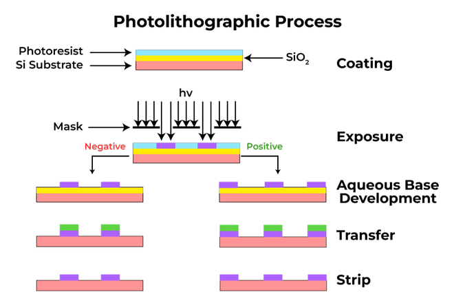

Creating materials at the nanoscale involves two primary methodologies: Top-Down and Bottom-Up approaches.
Top-Down Approach
Nanoscale dimensions are created by whittling down larger bulk components, usually controlled by external devices.
- Photolithography: Extensively used to produce patterns in silicon chips for microprocessors. A silicon wafer is coated with a photosensitive material, exposed to radiation through a patterned mask, developed, and then etched.
- Mechanical Exfoliation: Includes Micromechanical Cleavage (the famous "scotch tape" method used to first isolate graphene, though impossible to scale up) and Ultrasonication (using liquid cavitation from high-frequency sound waves to gently peel layers apart).
- Chemical Exfoliation: Processes like the Hummers method to prepare Graphene Oxide (GO). While highly scalable, it can emit toxic gases and damage the graphene basal plane, reducing conductivity.

Bottom-Up Approach
Molecular components arrange themselves into complex nanomaterials atom-by-atom or molecule-by-molecule.
- Chemical Vapor Deposition (CVD): In this process, gaseous precursors react in a heated reaction chamber to form a solid coating on a substrate. For example, growing graphene from Methane gas:
CH4 → C (Graphene) + 2H2.
Practice Exercises
Test your knowledge on the Synthesis of Nanomaterials.
1. Which of the following is considered a "Bottom-Up" approach to synthesizing nanomaterials?
A) Chemical Vapor Deposition (CVD)
B) Photolithography
C) Micromechanical Cleavage
2. What technique was historically used to first isolate a single sheet of graphene?
A) Laser etching
B) Chemical Vapor Deposition
C) Micromechanical Cleavage (Scotch tape method)
3. In photolithography, what causes the coating on the silicon wafer to change its properties?
A) Exposure to electromagnetic radiation through a mask
B) High-frequency sound waves
C) Acidic etching solutions
4. What is a known drawback of the chemical exfoliation (Hummers) method?
A) It is impossible to scale up for industrial use
B) It can emit toxic gases and damage the material's conductive basal plane
C) It requires absolute zero temperatures to work
5. What physical mechanism drives the exfoliation of graphite during Ultrasonication?
A) Thermal melting
B) Chemical oxidation
C) Liquid cavitation from high-frequency waves